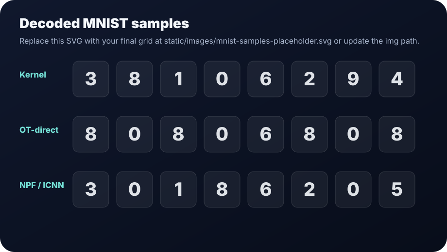
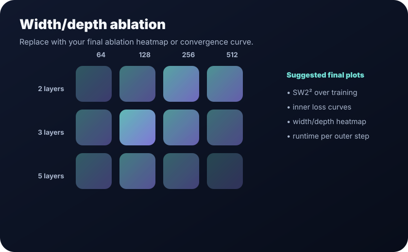

Encode data into a stable latent space
MNIST images are encoded by a convolutional VAE. The encoder mean is whitened and all transport/drift operations are performed in 6D latent space; decoding is used only for visual inspection.
CS-503 Visual Intelligence · Final Project
Replacing kernel drift fields with gradients of input-convex neural networks in drifting generative models.
Abstract
The original drifting generative model uses a kernel-based drift field. We instead parameterize the drift as Vω(z) = ∇ψω(z) − z, where ψω is an input-convex neural network. This makes the learned map compatible with the structure of optimal transport: a convex potential whose gradient transports generated latents toward data latents.
Our current pipeline operates in a frozen, whitened 6D MNIST VAE latent space. Direct entropic OT and ICNN drifts are now numerically stable after a set of diagnostic fixes. The honest preliminary picture is that the kernel baseline still gives the best diversity in this 6D regime, while the NPF/ICNN drift is competitive with OT-direct but remains bottlenecked by the inner optimization loop.
Method
We keep the drifting-generator idea, but replace the hand-designed kernel field by a learned convex potential.
MNIST images are encoded by a convolutional VAE. The encoder mean is whitened and all transport/drift operations are performed in 6D latent space; decoding is used only for visual inspection.
A one-step generator maps Gaussian noise to latent samples. The drift module then updates those samples toward the empirical data distribution.
The learned map is Tω(z)=∇ψω(z). Convexity is preserved with non-negative cascade weights and positive semidefinite quadratic injections.
We compare kernel drift, direct Sinkhorn barycentric drift, and NPF/ICNN regression-to-target drift using sliced-W2, moment gaps, and decoded sample grids.
Preliminary results
Lower is better for SW2², mean-gap, std-gap, and ∥Veval∥². The table is loaded from
static/data/results.json, so it is easy to update after final experiments.
Replace this placeholder with your final MNIST grid or copy a real image to the same path.

Kernel remains the best baseline in the current 6D regime.
| Method | SW2² ↓ | Mean gap ↓ | Std gap ↓ | ∥Veval∥² ↓ | Takeaway |
|---|
Diagnostics
The initial implementation looked good under the old diagnostic but produced collapsed samples. These fixes make the evaluation collapse-aware and the ICNN drift numerically meaningful.
Replaced ∥Veval∥² selection with sliced-W2, which penalizes collapse onto the data mean.
Replaced per-axis moment matching with a full covariance penalty to catch off-axis low-rank collapse.
Reset inner Adam per outer batch so momentum from noisy Sinkhorn targets does not leak across objectives.
Kept regression as the stable default and implemented a semi-dual + cycle-consistency alternative as opt-in.
Shrunk the live cascade at initialization and lowered the quadratic Hessian floor so the cascade can bend early.
Ablations
Use this area for width/depth sweeps, inner-step ablations, or learning-rate sensitivity. The included image is a placeholder so the page is complete even before final plots are copied in.

Next steps
Team
Edit the contribution bullets once your final division of work is fixed.
Website, diagnostics narrative, evaluation presentation. Edit contribution.
Model implementation and experiments. Edit contribution.
Baselines, metrics, and result analysis. Edit contribution.
Repository owner, model experiments, and report integration. Edit contribution.